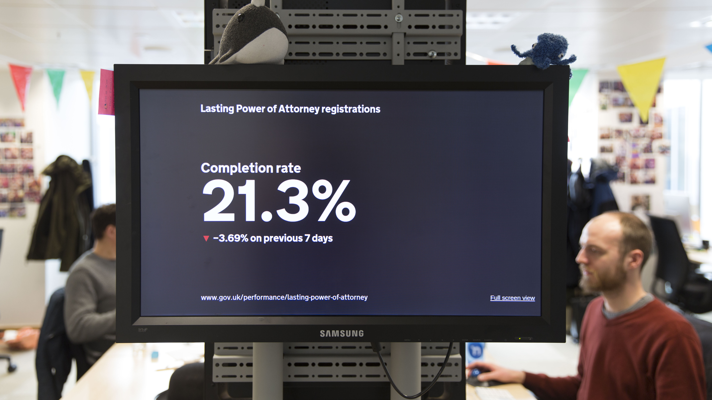
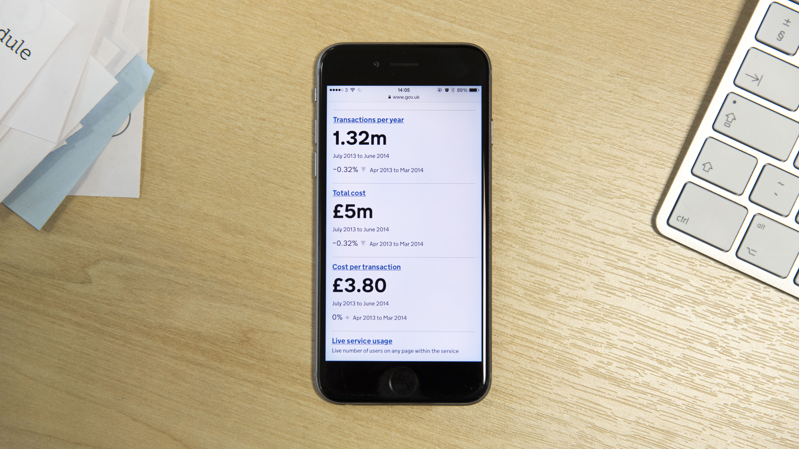
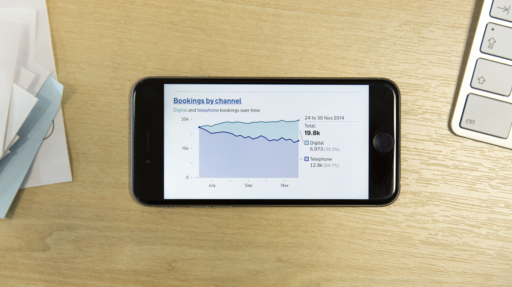

Home
Performance Platform
GOV.UK Performance is a new approach to improving government services, using data. I'm helping our team learn about users and make decisions on what we should do next.

Big screen view of data.
Multiple data sets on one screen.

